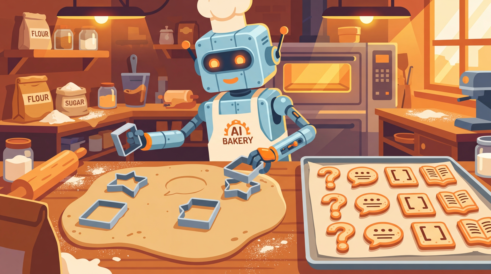

"Give a model a dataset and it learns for a day. Teach a model to generate its own dataset and, well, you get Alpaca."
A Self-Bootstrapping AI Agent
Prerequisites
Before starting, make sure you are familiar with synthetic data basics as covered in Section 12.1: Principles of Synthetic Data Generation.
From manual curation to automated factories. The most successful open-source models (Llama, Phi, Mistral) were trained on datasets built by sophisticated generation pipelines, not by armies of human annotators. These pipelines use LLMs themselves as data generators, applying techniques like Self-Instruct (generate instructions from a seed set), Evol-Instruct (progressively evolve instructions to increase complexity), and persona-driven generation (simulate diverse expert perspectives). Building on the foundational concepts from Section 12.1, this section teaches you to build these pipelines from scratch.

1. Self-Instruct: Bootstrapping from Seeds
Stanford's Alpaca model was fine-tuned on 52,000 instruction-response pairs, and not a single one was written by a human annotator. The entire dataset was generated by GPT-3.5 from just 175 seed examples in a matter of hours, at a total cost of under $500. That result, which produced a model competitive with commercial offerings, demonstrated that a well-designed generation pipeline can replace months of human annotation work.
By the end of this section, you will be able to build three types of data generation pipelines: Self-Instruct (bootstrap from seeds), Evol-Instruct (evolve instructions to increase complexity), and persona-driven generation (simulate diverse expert perspectives). We start with Self-Instruct, the foundational technique that launched the open-source instruction-tuning movement.

Self-Instruct, introduced by Wang et al. (2023), starts with a small set of human-written seed instructions (typically 100 to 200) and uses an LLM to generate new instructions, classify them, and produce responses. The key innovation is that the LLM generates both the task description and the solution, creating complete training examples with minimal human involvement.
Mental Model: The Sourdough Starter
Think of Self-Instruct as a sourdough starter for training data. You begin with a small batch of seed instructions (the starter culture), and the LLM generates new instructions from those seeds, which then breed further instructions. Each generation builds on the previous one, growing the dataset exponentially from a handful of examples. Like real sourdough, quality depends on the health of the starter: poor seed examples produce bland, repetitive outputs, while diverse, high-quality seeds yield a rich dataset.
1.1 The Self-Instruct Pipeline
Figure 12.2.1 traces the Self-Instruct pipeline from seed examples through generation, classification, filtering, and iteration. Code Fragment 1 shows this approach in practice.
The following implementation (Code Fragment 2) shows this approach in practice.
Code Fragment 1 demonstrates the Batch API workflow.
# Generate diverse instructions using the Self-Instruct pipeline
# Seed tasks bootstrap generation; the LLM expands the instruction set
import json
import random
from openai import OpenAI
client = OpenAI()
# Seed instructions (in practice, use 150-200 diverse examples)
SEED_INSTRUCTIONS = [
"Write a Python function that reverses a linked list.",
"Explain the difference between TCP and UDP protocols.",
"Summarize the key principles of object-oriented programming.",
"Convert the following CSV data into a JSON format.",
"What are the pros and cons of microservices architecture?"
]
def self_instruct_generate(
seed_pool: list[str],
num_examples: int = 8,
model: str = "gpt-4o"
) -> dict:
"""Generate a new instruction-response pair using Self-Instruct."""
# Step 1: Sample from the seed pool
sampled = random.sample(seed_pool, min(num_examples, len(seed_pool)))
examples_text = "\n".join(f"{i+1}. {inst}" for i, inst in enumerate(sampled))
# Step 2: Generate a new instruction
gen_prompt = f"""Here are {len(sampled)} example task instructions:
{examples_text}
Generate a completely NEW and DIFFERENT task instruction that:
- Is distinct from all the examples above
- Is specific and actionable
- Can be answered in a single response
- Covers a different topic or skill
New instruction:"""
gen_response = client.chat.completions.create(
model=model,
messages=[{"role": "user", "content": gen_prompt}],
temperature=1.0,
max_tokens=200
)
new_instruction = gen_response.choices[0].message.content.strip()
# Step 3: Generate the response
resp_response = client.chat.completions.create(
model=model,
messages=[
{"role": "system", "content": "Provide a thorough, accurate, "
"and well-structured response to the following instruction."},
{"role": "user", "content": new_instruction}
],
temperature=0.7,
max_tokens=1024
)
response_text = resp_response.choices[0].message.content.strip()
return {
"instruction": new_instruction,
"response": response_text,
"source": "self-instruct",
"seed_count": len(sampled)
}
# Generate a batch
pool = SEED_INSTRUCTIONS.copy()
generated = []
for i in range(3):
pair = self_instruct_generate(pool)
generated.append(pair)
pool.append(pair["instruction"]) # Add back to pool
print(f"Generated {i+1}: {pair['instruction'][:60]}...")
The following snippet in Code Fragment 2 demonstrates the implementation.
# Define the generate_conversation function
# This handles the core processing logic
def generate_conversation(
topic: str,
persona: str,
num_turns: int = 4,
model: str = "gpt-4o"
) -> list[dict]:
"""Generate a multi-turn conversation with natural follow-ups."""
system_msg = f"""You are simulating a realistic conversation between a
user and an AI assistant. The user has the following persona: {persona}
Topic: {topic}
Generate a natural {num_turns}-turn conversation where:
- Each user message builds on the previous assistant response
- The user asks increasingly specific follow-up questions
- The assistant provides detailed, helpful responses
- The conversation feels natural, not scripted
Format each turn as:
USER: [message]
ASSISTANT: [response]"""
# Send chat completion request to the API
response = client.chat.completions.create(
model=model,
messages=[{"role": "user", "content": system_msg}],
temperature=0.85,
max_tokens=2048
)
# Parse turns from the generated conversation
text = response.choices[0].message.content
turns = []
current_role = None
current_text = []
for line in text.split("\n"):
if line.startswith("USER:"):
if current_role:
turns.append({"role": current_role,
"content": "\n".join(current_text).strip()})
current_role = "user"
current_text = [line.replace("USER:", "").strip()]
elif line.startswith("ASSISTANT:"):
if current_role:
turns.append({"role": current_role,
"content": "\n".join(current_text).strip()})
current_role = "assistant"
current_text = [line.replace("ASSISTANT:", "").strip()]
else:
current_text.append(line)
if current_role:
turns.append({"role": current_role,
"content": "\n".join(current_text).strip()})
return turns
# Generate diverse conversations
conversations = [
generate_conversation(
"optimizing PostgreSQL queries",
"junior backend developer with 1 year experience"
),
generate_conversation(
"building a recommendation system",
"data scientist transitioning from academia to industry"
),
]
for i, conv in enumerate(conversations):
print(f"Conversation {i+1}: {len(conv)} turns")
for turn in conv[:2]:
print(f" {turn['role']}: {turn['content'][:60]}...")
4. Persona-Driven Generation
One of the most effective techniques for increasing diversity in synthetic data is persona-driven generation. Instead of generating all data with the same system prompt, you create a library of diverse personas that simulate different users, expertise levels, communication styles, and backgrounds. Each persona produces instructions and conversations that reflect its unique perspective. Code Fragment 3 shows this approach in practice.
# Implement Evol-Instruct to evolve simple instructions into complex ones
# Successive transformations add constraints, reasoning steps, and edge cases
import itertools
PERSONA_DIMENSIONS = {
"expertise": ["beginner", "intermediate", "senior", "expert"],
"role": [
"software engineer", "data scientist", "product manager",
"student", "researcher", "DevOps engineer"
],
"communication_style": [
"concise and direct",
"detailed and thorough",
"casual and conversational",
"formal and precise"
],
"context": [
"working on a startup MVP",
"maintaining a legacy enterprise system",
"preparing for a technical interview",
"writing a research paper",
"building a side project"
]
}
def build_persona(dimensions: dict) -> str:
"""Construct a persona description from dimension choices."""
return (
f"A {dimensions['expertise']}-level {dimensions['role']} who "
f"communicates in a {dimensions['communication_style']} manner. "
f"Currently {dimensions['context']}."
)
def generate_with_persona(persona: str, topic: str) -> dict:
"""Generate an instruction from a specific persona's perspective."""
prompt = f"""You are role-playing as the following persona:
{persona}
Given this persona, write a realistic question or task instruction
that this person would actually ask about: {topic}
The question should reflect the persona's expertise level,
communication style, and current context. Be authentic.
Question:"""
# Send chat completion request to the API
response = client.chat.completions.create(
model="gpt-4o",
messages=[{"role": "user", "content": prompt}],
temperature=0.9,
max_tokens=200
)
return {
"persona": persona,
"topic": topic,
# Extract the generated message from the API response
"instruction": response.choices[0].message.content.strip()
}
# Generate diverse data by sampling persona combinations
def sample_personas(n: int = 10) -> list[dict]:
"""Sample n diverse persona combinations."""
personas = []
for _ in range(n):
dims = {
key: random.choice(values)
for key, values in PERSONA_DIMENSIONS.items()
}
personas.append(dims)
return personas
persona_samples = sample_personas(5)
for dims in persona_samples:
persona = build_persona(dims)
result = generate_with_persona(persona, "database indexing")
print(f"Persona: {persona[:60]}...")
print(f" Q: {result['instruction'][:70]}...")
print()
With 4 expertise levels, 6 roles, 4 communication styles, and 5 contexts, the persona space contains 480 unique combinations. Even a modest sample of 50 to 100 persona combinations produces significantly more diverse data than a single-persona approach. Studies on the Orca and Phi datasets showed that persona-driven generation improved downstream model performance by 5% to 15% on diversity-sensitive benchmarks.
5. Domain-Specific Generation Strategies
Generic generation pipelines work well for general-purpose instruction data, but domain-specific tasks (medical, legal, financial, scientific) require additional structure. Domain-specific generation uses schema-guided prompting, terminology constraints, and document-grounded generation to produce accurate, specialized data. Code Fragment 5 shows this in practice.
| Strategy | Approach | Best For |
|---|---|---|
| Schema-Guided | Provide domain ontology/schema as context | Medical coding, legal classification |
| Document-Grounded | Generate QA pairs from domain documents | Technical documentation, research papers |
| Template + Fill | Domain templates with LLM-filled slots | Clinical notes, financial reports |
| Terminology-Constrained | Enforce domain vocabulary usage | Legal contracts, medical records |
| Expert Review Loop | Generate, expert reviews, regenerate | High-stakes domains with low error tolerance |
Code Fragment 4 demonstrates this approach.
# Define the domain_grounded_generation function
# This handles the core processing logic
def domain_grounded_generation(
document: str,
domain: str,
num_pairs: int = 3,
model: str = "gpt-4o"
) -> list[dict]:
"""Generate QA pairs grounded in a domain document."""
prompt = f"""You are an expert in {domain}. Given the following document,
generate {num_pairs} question-answer pairs that test understanding of the
key concepts. Each question should:
- Be answerable from the document content
- Range from factual recall to analytical reasoning
- Use proper domain terminology
- Be relevant to a practitioner in this field
Document:
{document[:3000]}
Generate exactly {num_pairs} pairs in this format:
Q1: [question]
A1: [detailed answer with references to the document]
Q2: ...
A2: ..."""
# Send chat completion request to the API
response = client.chat.completions.create(
model=model,
messages=[{"role": "user", "content": prompt}],
temperature=0.7,
max_tokens=2048
)
# Parse QA pairs
text = response.choices[0].message.content
pairs = []
lines = text.split("\n")
current_q, current_a = None, None
for line in lines:
if line.startswith("Q") and ":" in line[:4]:
if current_q and current_a:
pairs.append({"question": current_q, "answer": current_a})
current_q = line.split(":", 1)[1].strip()
current_a = None
elif line.startswith("A") and ":" in line[:4]:
current_a = line.split(":", 1)[1].strip()
if current_q and current_a:
pairs.append({"question": current_q, "answer": current_a})
return pairs
# Example: Generate from a technical document
sample_doc = """
PostgreSQL uses a cost-based query optimizer that evaluates multiple
execution plans and selects the one with the lowest estimated cost.
The optimizer considers sequential scan cost, index scan cost, join
strategies (nested loop, hash join, merge join), and statistics
collected by ANALYZE. The work_mem parameter controls how much memory
is available for sort operations before spilling to disk.
"""
pairs = domain_grounded_generation(sample_doc, "database engineering")
for p in pairs:
print(f"Q: {p['question'][:70]}...")
print(f"A: {p['answer'][:70]}...")
print()
6. Preference and Ranking Data Generation
Alignment training methods like RLHF and DPO require preference data: pairs of responses where one is preferred over the other. Generating this data synthetically requires careful design to ensure the quality gap between chosen and rejected responses is realistic (not too obvious, not too subtle). Figure 12.2.3 contrasts the two main approaches to synthetic preference data.
Avoid trivially distinguishable pairs. If the rejected response is clearly terrible (e.g., random text or completely off-topic), the model learns an easy shortcut rather than developing nuanced preference understanding. The best preference datasets have subtle quality differences: a response that is mostly correct but misses a key detail, or one that is accurate but poorly organized. The UltraFeedback dataset showed that models trained on subtly contrasting pairs outperformed those trained on obvious quality gaps. For a deeper look at how preference data shapes alignment, see Section 16.2 on DPO and preference optimization.
The cost of generating a million synthetic training examples with an LLM API is often less than the cost of hiring a single human annotator for a week. The quality trade-off is real, but the economics are hard to ignore.
📝 Knowledge Check
Show Answer
Show Answer
Show Answer
Show Answer
Show Answer
Key Takeaways
- Self-Instruct bootstraps datasets from small seed sets by using LLMs to generate new instructions, classify them, produce responses, and add survivors back to the pool. This created the Alpaca dataset from just 175 seeds.
- Evol-Instruct progressively increases complexity through five operations (add constraints, deepen, concretize, increase reasoning, complicate input), producing natural difficulty curricula.
- Multi-turn conversation synthesis requires follow-up planners and cross-turn coherence checks to ensure context builds naturally across exchanges.
- Persona-driven generation multiplies diversity by simulating different expertise levels, roles, styles, and contexts. The combinatorial space of personas produces far more varied data than single-prompt approaches.
- Domain-specific pipelines need schema-guided prompting, document grounding, and terminology constraints to produce accurate specialized data.
- Preference data for alignment should have subtle, not obvious, quality differences between chosen and rejected responses to train nuanced preference models.
Scaling Instruction Data with Evol-Instruct for a Domain-Specific Coding Assistant
Who: A developer tools startup building a coding assistant specialized in infrastructure-as-code (Terraform, Ansible, Kubernetes YAML).
Situation: They had 500 high-quality instruction-response pairs written by DevOps engineers, but needed at least 20,000 to fine-tune a model that could handle the breadth of infrastructure automation tasks.
Problem: DevOps engineers cost $150/hour and could produce only 10 to 15 quality examples per hour. Scaling to 20,000 examples would cost $200,000 or more and take months.
Dilemma: They could use Self-Instruct (simpler but tends to produce repetitive outputs in narrow domains), Evol-Instruct (more diverse but requires careful tuning of evolution operators), or a combination of both with domain-specific constraints.
Decision: They implemented Evol-Instruct with five custom evolution operators tailored to infrastructure code: add resource dependencies, increase multi-cloud complexity, introduce error handling requirements, add security constraints, and combine multiple tools in one task.
How: Starting from the 500 seed examples, they ran 4 evolution rounds, each producing 3 variants per surviving example. A domain-specific validator checked that generated Terraform/Ansible code was syntactically valid (using terraform validate and ansible-lint). Invalid examples were discarded, and a deduplication pass removed near-duplicates using code AST similarity.
Result: After 4 rounds, they produced 28,000 candidate pairs, of which 22,000 passed validation and deduplication. The fine-tuned model achieved 78% pass@1 on a held-out test set of 200 infrastructure tasks, compared to 45% for the base model and 82% for GPT-4. Generation cost was $3,200 in API fees.
Lesson: Evol-Instruct is most effective when evolution operators are domain-specific rather than generic; combining LLM-based evolution with deterministic validators (linters, parsers) ensures generated data is both diverse and syntactically correct.
The 2024 wave of persona-driven generation pipelines (as seen in Cosmopedia and Persona Hub) represents a shift toward controlling synthetic data diversity through explicit demographic and expertise profiles. Emerging work on constitutional data generation embeds safety and quality constraints directly into the generation pipeline rather than applying them as post-hoc filters. A key open challenge is building generation pipelines that can reliably produce data for underrepresented languages and domains where seed examples are extremely scarce.
What's Next?
In the next section, Section 12.3: LLM-as-Simulator & Evaluation Generation, we explore using LLMs as simulators for evaluation generation, creating test scenarios and benchmark data. The Self-Instruct and Evol-Instruct pipelines described here produce the training data that feeds directly into fine-tuning data preparation (Section 13.2) and DPO preference optimization (Section 16.2).